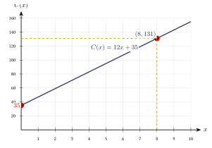
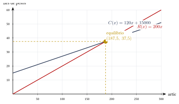

Capítulo 32
Aplicaciones de la línea recta
UNAM IPN
La ecuación de una recta permite representar situaciones en las que una cantidad cambia a una razón constante respecto de otra.
En este capítulo aprenderás a:
- interpretar la pendiente en un problema;
- construir modelos lineales;
- calcular valores iniciales y razones de cambio;
- resolver problemas de movimiento, costos y depreciación;
- interpretar intersecciones de rectas;
- calcular puntos de equilibrio.
32.1 Modelo lineal#
Una relación lineal puede expresarse mediante:
donde:
- \(x\) es la variable independiente;
- \(y\) es la variable dependiente;
- \(m\) es la pendiente o razón de cambio;
- \(b\) es el valor inicial.
La pendiente indica cuánto cambia \(y\) cuando \(x\) aumenta una unidad:
Si se conocen dos puntos:
la pendiente es:
| Elemento | Interpretación |
|---|---|
| \(m>0\) | La cantidad aumenta |
| \(m<0\) | La cantidad disminuye |
| \(m=0\) | La cantidad permanece constante |
| \(b\) | Valor de \(y\) cuando \(x=0\) |
En una aplicación, la pendiente debe interpretarse con sus unidades.
Por ejemplo:
puede significar:
o:
32.2 Construcción de un modelo lineal#
Para construir un modelo lineal:
- identifica las variables;
- determina la razón de cambio;
- encuentra el valor inicial;
- escribe: \[y=mx+b;\]
- verifica el modelo con los datos del problema.
Un servicio de transporte cobra una tarifa inicial de:
más:
por cada kilómetro recorrido.
Escribe una ecuación para el costo total.
Ver solución
Sea:
y:
La tarifa por kilómetro es la pendiente:
La tarifa inicial es:
Por tanto:
Para un recorrido de \(8\) kilómetros:
Por tanto:
32.3 Interpretación de la pendiente#
La pendiente representa una razón de cambio constante.
El volumen de agua de un recipiente está dado por:
donde \(V\) se mide en litros y \(t\) en minutos.
Interpreta la pendiente y la ordenada al origen.
Ver solución
La pendiente es:
Esto significa que el volumen disminuye a una razón de:
La ordenada al origen es:
Esto significa que al inicio:
el recipiente contiene:
El signo de la pendiente forma parte de su interpretación.
En el modelo:
la razón de cambio no es solamente \(15\), sino:
El signo negativo indica una disminución.
32.4 Modelo a partir de dos puntos#
Si una relación lineal contiene los puntos:
y:
primero se calcula la pendiente:
Después se utiliza la forma punto-pendiente:
Finalmente, puede transformarse a la forma:
Una empresa produce \(40\) artículos con un costo total de:
Producir \(70\) artículos cuesta:
Suponiendo una relación lineal, encuentra la función de costo.
Ver solución
Los puntos son:
y:
Calculamos la pendiente:
La pendiente representa un costo variable de:
por artículo.
Utilizamos el punto \((40,2600)\):
Desarrollamos:
Despejamos:
El costo fijo es:
32.5 Representación gráfica de un modelo#
En una gráfica lineal:
- la pendiente indica la inclinación;
- la ordenada al origen representa el valor inicial;
- cada punto de la recta representa una pareja de valores que satisface el modelo.

32.6 Movimiento rectilíneo uniforme#
Si un objeto se mueve con velocidad constante, su posición puede modelarse mediante:
donde:
- \(d_0\) es la posición inicial;
- \(v\) es la velocidad constante;
- \(t\) es el tiempo;
- \(d(t)\) es la posición en el tiempo \(t\).
Un automóvil se encuentra a:
de una ciudad y se aleja con velocidad constante de:
Escribe la función de posición y calcula su distancia después de \(2.5\) horas.
Ver solución
La posición inicial es:
La velocidad es:
Por tanto:
Después de \(2.5\) horas:
Por tanto:
32.7 Encuentro de dos móviles#
Dos objetos se encuentran cuando ocupan la misma posición en el mismo instante.
Si sus posiciones son:
y:
el momento del encuentro se obtiene resolviendo:
Dos ciudades están separadas por:
Un automóvil parte de la primera ciudad a:
mientras otro parte simultáneamente de la segunda ciudad hacia la primera a:
Determina cuándo se encuentran.
Ver solución
Tomamos como origen la primera ciudad.
La posición del primer automóvil es:
La posición del segundo es:
En el encuentro:
Por tanto:
La posición del encuentro es:
Se encuentran después de:
a:
de la primera ciudad.
32.8 Costos, ingresos y utilidad#
Una función de costo lineal suele escribirse como:
donde:
- \(b\) es el costo fijo;
- \(m\) es el costo variable por unidad;
- \(x\) es el número de unidades producidas.
Si cada unidad se vende a un precio \(p\), el ingreso es:
La utilidad es:
Una empresa tiene un costo fijo de:
y un costo de producción de:
por artículo.
Cada artículo se vende en:
Encuentra las funciones de costo, ingreso y utilidad.
Ver solución
La función de costo es:
La función de ingreso es:
La utilidad es:
Por tanto:
32.9 Punto de equilibrio#
El punto de equilibrio ocurre cuando los ingresos son iguales a los costos:
En ese punto:
Para la empresa anterior:
y:
Calcula el punto de equilibrio.
Ver solución
Igualamos costo e ingreso:
Como no pueden venderse \(187.5\) artículos, la empresa debe vender al menos:
para comenzar a obtener utilidad.
El punto de equilibrio teórico corresponde a:
El costo y el ingreso en ese punto son:
Por tanto, el punto de equilibrio teórico es:

32.10 Comparación de planes#
Cuando existen dos planes de pago, cada uno puede representarse con una recta.
La intersección indica el valor para el cual ambos planes cuestan lo mismo.
Dos compañías de telefonía ofrecen los siguientes planes:
donde \(x\) es el número de minutos utilizados.
Determina para cuántos minutos ambos planes cuestan lo mismo.
Ver solución
Igualamos:
Por tanto:
El costo común es:
Los dos planes cuestan lo mismo al utilizar:
El costo común es:
Antes del punto de intersección conviene un plan y después del punto de intersección puede convenir el otro.
Para decidir cuál es más económico, puede evaluarse un valor a cada lado de la intersección.
32.11 Depreciación lineal#
La depreciación lineal supone que un objeto pierde el mismo valor en cada periodo.
Si un objeto tiene valor inicial \(V_0\) y pierde \(d\) unidades monetarias por periodo:
La pendiente es negativa:
Una máquina cuesta inicialmente:
y pierde:
de valor cada año.
Encuentra su valor después de \(6\) años.
Ver solución
El modelo es:
Evaluamos:
Por tanto:
La función de valor de un automóvil es:
Determina cuándo alcanzará un valor de:
Ver solución
Igualamos:
Por tanto:
El automóvil alcanzará ese valor después de:
32.12 Conversiones lineales#
Algunas conversiones entre escalas pueden representarse mediante una ecuación lineal.
Un ejemplo es la conversión entre grados Celsius y Fahrenheit:
La pendiente es:
Esto significa que un aumento de:
corresponde a un aumento de:
La ordenada al origen:
indica que:
Convierte:
a grados Fahrenheit.
Ver solución
Por tanto:
Convierte:
a grados Celsius.
Ver solución
Partimos de:
Restamos \(32\):
Multiplicamos por:
Por tanto:
32.13 Intersecciones con los ejes#
En una aplicación, las intersecciones con los ejes pueden tener un significado concreto.
32.13.1 Intersección con el eje vertical#
Se obtiene haciendo:
En el modelo:
la intersección es:
Generalmente representa el valor inicial.
32.13.2 Intersección con el eje horizontal#
Se obtiene haciendo:
Entonces:
Si:
se obtiene:
Puede representar el instante en que una cantidad se agota o alcanza el valor cero.
Un tanque contiene agua según el modelo:
Determina cuándo se vacía.
Ver solución
El tanque está vacío cuando:
Entonces:
Por tanto:
El tanque se vacía después de:
32.14 Dominio del modelo#
Aunque una recta se extiende indefinidamente, un modelo aplicado puede tener un dominio limitado.
En el ejemplo:
el modelo físico solo tiene sentido mientras:
Como el tanque se vacía en \(24\) minutos, el dominio del modelo es:
No todos los valores matemáticamente posibles tienen sentido en el contexto del problema.
Por ejemplo:
- el tiempo no suele ser negativo;
- una cantidad de artículos debe ser entera;
- un volumen no puede ser negativo;
- una distancia física debe respetar el intervalo estudiado.
32.15 Procedimiento rápido#
Construcción de un modelo#
- Define las variables.
- Identifica la razón de cambio.
- Determina el valor inicial.
- Escribe: \[y=mx+b.\]
- Verifica las unidades.
Modelo a partir de dos puntos#
- Calcula: \[m = \frac{y_2-y_1}{x_2-x_1}.\]
- Utiliza: \[y-y_1=m(x-x_1).\]
- Despeja \(y\).
- Interpreta \(m\) y \(b\).
Intersección de modelos#
- Escribe las dos funciones.
- Iguala sus valores.
- Resuelve la ecuación.
- Sustituye para obtener la segunda coordenada.
- Interpreta el resultado.
32.16 Resumen#
Modelo lineal:
Pendiente:
Forma punto-pendiente:
Movimiento uniforme:
Costo lineal:
Ingreso:
Utilidad:
Punto de equilibrio:
Depreciación lineal:
Conversión de temperatura:
32.17 Errores frecuentes#
Recuerda:
- La pendiente debe interpretarse con unidades.
- El valor inicial corresponde generalmente a: \[x=0.\]
- Una pendiente negativa indica disminución.
- Al calcular la pendiente debe conservarse el mismo orden en numerador y denominador.
- El costo fijo no depende de la cantidad producida.
- El ingreso no es lo mismo que la utilidad.
- El punto de equilibrio ocurre cuando: \[R(x)=C(x).\]
- En problemas de movimiento, dos objetos se encuentran cuando tienen la misma posición al mismo tiempo.
- El dominio debe respetar las restricciones del contexto.
- Una relación aproximadamente lineal no tiene que pasar por todos los datos exactamente.
32.18 Ejercicios propuestos#
Un servicio de transporte cobra:
de tarifa inicial y:
por cada kilómetro recorrido.
- Escribe la función de costo.
- Calcula el costo de un recorrido de \(12\) kilómetros.
- Interpreta la pendiente y la ordenada al origen.
Ver solución
Sea:
La tarifa inicial es:
y el costo por cada kilómetro es:
Por tanto, la función de costo es:
Para un recorrido de \(12\) kilómetros:
Por tanto:
La pendiente:
representa un costo de:
La ordenada al origen:
representa la tarifa inicial de:
Un tanque contiene inicialmente:
y pierde:
- Escribe la función del volumen.
- Calcula el volumen después de \(18\) minutos.
- Determina cuándo se vacía.
Ver solución
Sea:
El volumen inicial es:
Como el tanque pierde \(30\) litros por minuto, la pendiente es:
La función del volumen es:
Después de \(18\) minutos:
Por tanto:
El tanque se vacía cuando:
Entonces:
Por tanto:
Una cantidad lineal toma los valores:
y:
Encuentra su ecuación en la forma:
Ver solución
Los puntos son:
y:
Calculamos la pendiente:
Utilizamos:
Sustituimos el punto \((4,27)\):
Por tanto:
La ecuación es:
Una empresa produce \(50\) artículos con un costo de:
Producir \(90\) artículos cuesta:
Suponiendo una relación lineal:
- encuentra la función de costo;
- identifica el costo fijo;
- identifica el costo variable por artículo.
Ver solución
Los datos corresponden a los puntos:
y:
Calculamos la pendiente:
La pendiente representa un costo variable de:
Utilizamos:
Sustituimos el punto \((50,4500)\):
Por tanto:
La función de costo es:
El costo fijo es:
El costo variable es:
Un automóvil se encuentra inicialmente a:
de una ciudad y se aleja a velocidad constante de:
- Escribe la función de posición.
- Calcula su distancia después de \(4\) horas.
Ver solución
Sea:
La posición inicial es:
y la velocidad constante es:
Por tanto, la función de posición es:
Después de \(4\) horas:
Por tanto:
Dos ciudades están separadas por:
Dos automóviles parten simultáneamente uno hacia el otro con velocidades de:
y:
Determina:
- cuánto tiempo tardan en encontrarse;
- a qué distancia de la primera ciudad ocurre el encuentro.
Ver solución
Tomamos la primera ciudad como origen.
La posición del primer automóvil es:
El segundo automóvil comienza a \(420\) kilómetros del origen y se desplaza hacia la primera ciudad. Su posición es:
Los automóviles se encuentran cuando:
Entonces:
Por tanto, tardan:
en encontrarse.
Esta cantidad equivale a:
La distancia desde la primera ciudad es:
Por tanto, se encuentran a:
de la primera ciudad.
Una empresa tiene un costo fijo de:
y un costo variable de:
por artículo.
Cada artículo se vende en:
- Escribe la función de costo.
- Escribe la función de ingreso.
- Escribe la función de utilidad.
- Calcula el punto de equilibrio.
Ver solución
El costo fijo es:
y el costo variable es:
La función de costo es:
Cada artículo se vende en:
Por tanto, la función de ingreso es:
La utilidad es:
Simplificamos:
En el punto de equilibrio:
Entonces:
Por tanto:
El costo y el ingreso correspondientes son:
El punto de equilibrio es:
La empresa debe vender:
para cubrir exactamente sus costos.
Dos compañías ofrecen los planes:
y:
Determina:
- para qué valor de \(x\) ambos planes cuestan lo mismo;
- cuál es el costo común;
- cuál plan conviene para valores mayores que la intersección.
Ver solución
Los planes son:
y:
Igualamos los costos:
Restamos \(1.25x\) en ambos lados:
Restamos \(180\):
Por tanto:
Calculamos el costo común:
Verificamos con el segundo plan:
Ambos planes cuestan lo mismo cuando:
El costo común es:
Para valores mayores que \(120\), conviene el plan \(B\), porque su pendiente es menor:
Esto significa que el costo adicional por unidad de consumo es menor en el plan \(B\).
Una computadora cuesta inicialmente:
y pierde:
de valor cada año.
- Escribe la función de depreciación.
- Calcula su valor después de \(5\) años.
- Determina cuándo alcanzará un valor de \(\$9{,}000\).
Ver solución
El valor inicial de la computadora es:
La computadora pierde:
cada año.
Por tanto, la función de depreciación es:
Después de \(5\) años:
Por tanto:
Para determinar cuándo alcanzará un valor de \(\$9{,}000\):
Por tanto:
La computadora alcanzará un valor de:
después de:
Utiliza:
Convierte:
- \(30^\circ C\) a grados Fahrenheit;
- \(68^\circ F\) a grados Celsius.
Ver solución
La fórmula de conversión es:
Para convertir:
a grados Fahrenheit:
Por tanto:
Para convertir:
a grados Celsius, sustituimos:
Restamos \(32\):
Multiplicamos por:
Por tanto:
La temperatura de una sustancia disminuye linealmente. A los \(2\) minutos es:
y a los \(8\) minutos es:
- Encuentra la función de temperatura.
- Interpreta la pendiente.
- Calcula la temperatura a los \(12\) minutos.
Ver solución
Los datos corresponden a los puntos:
y:
Calculamos la pendiente:
La pendiente indica que la temperatura disminuye:
por minuto.
Utilizamos:
Sustituimos el punto \((2,86)\):
Por tanto:
La función de temperatura es:
A los \(12\) minutos:
Por tanto:
Una empresa registra los siguientes datos:
- Verifica que la relación es lineal.
- Encuentra la pendiente.
- Determina la ecuación.
- Calcula el valor correspondiente a \(x=75\).
Ver solución
Los datos son:
Cuando \(x\) aumenta en:
el valor de \(y\) aumenta en:
Como la diferencia es constante, la relación es lineal.
La pendiente es:
Utilizamos:
Sustituimos el punto \((10,125)\):
Por tanto:
La ecuación es:
Para:
calculamos:
Por tanto: